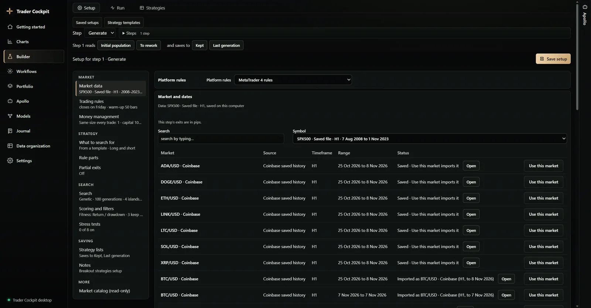
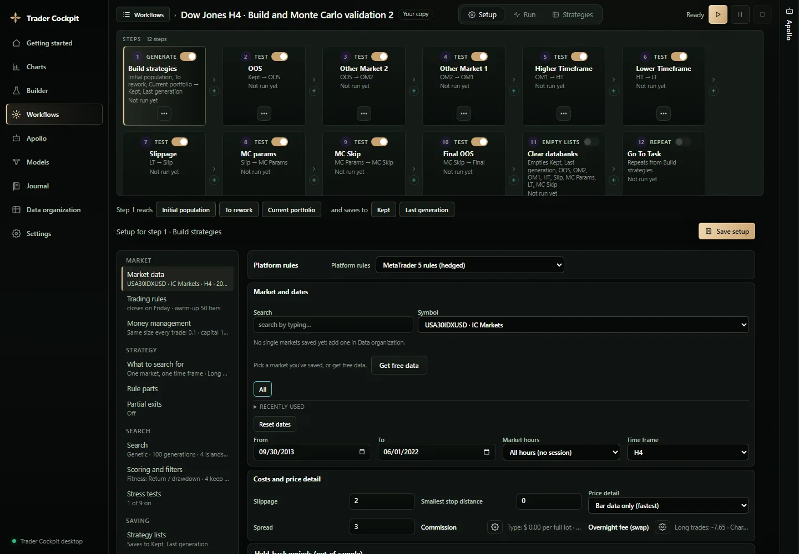
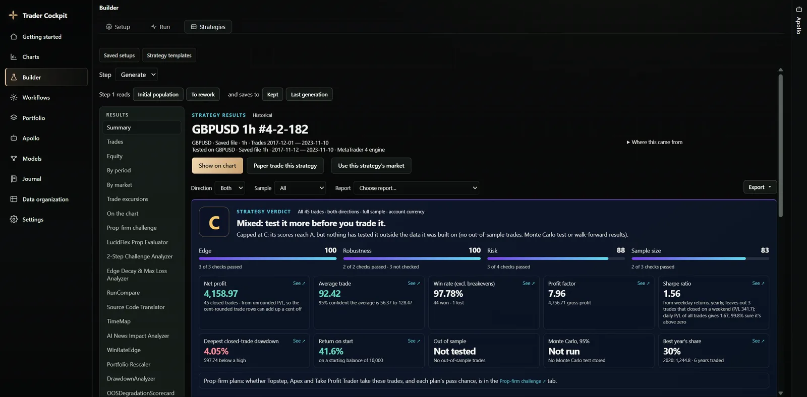
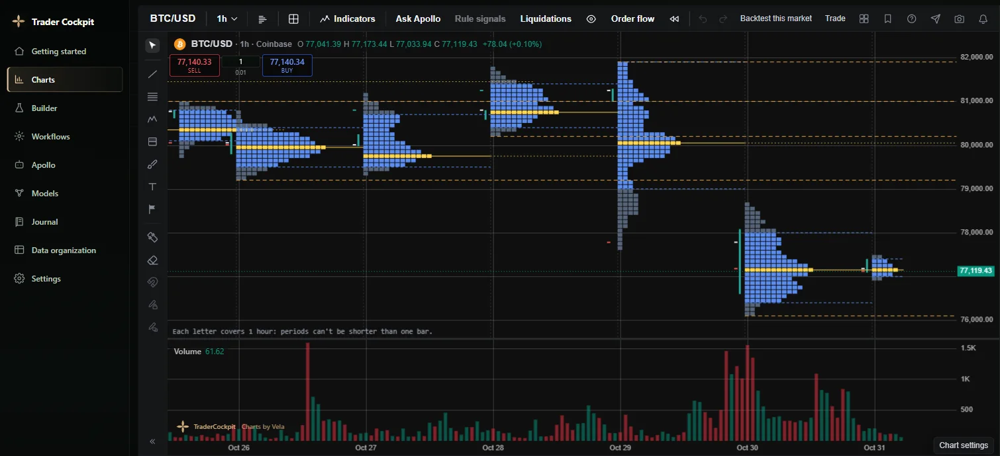
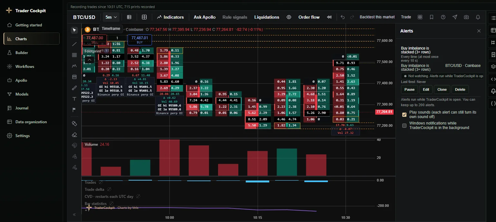
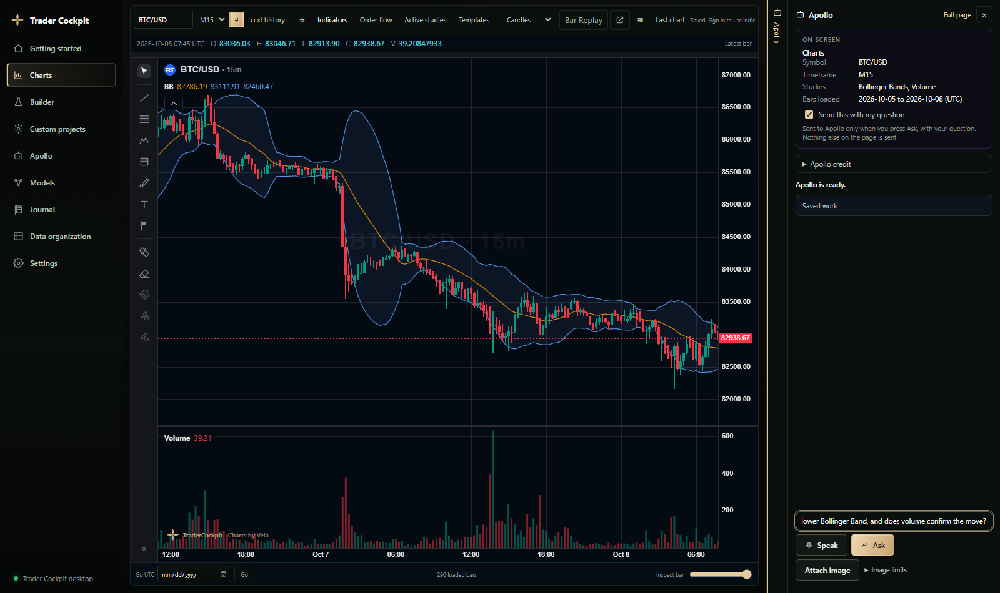
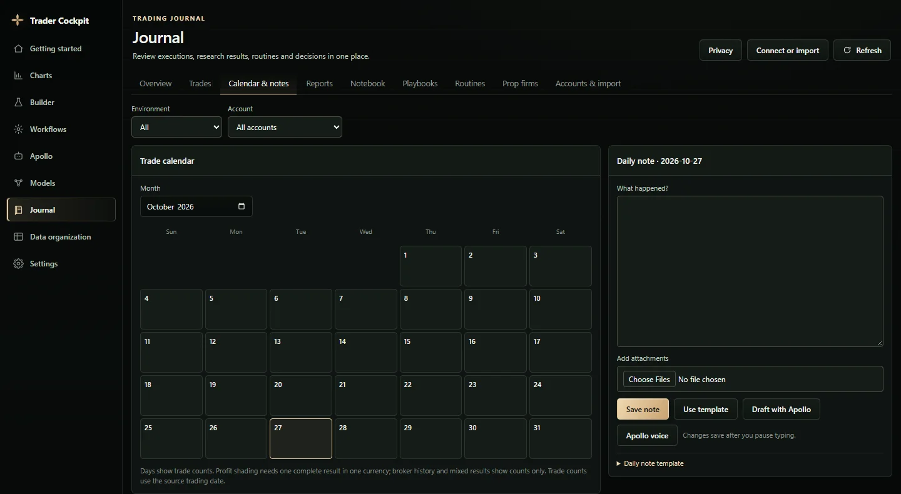
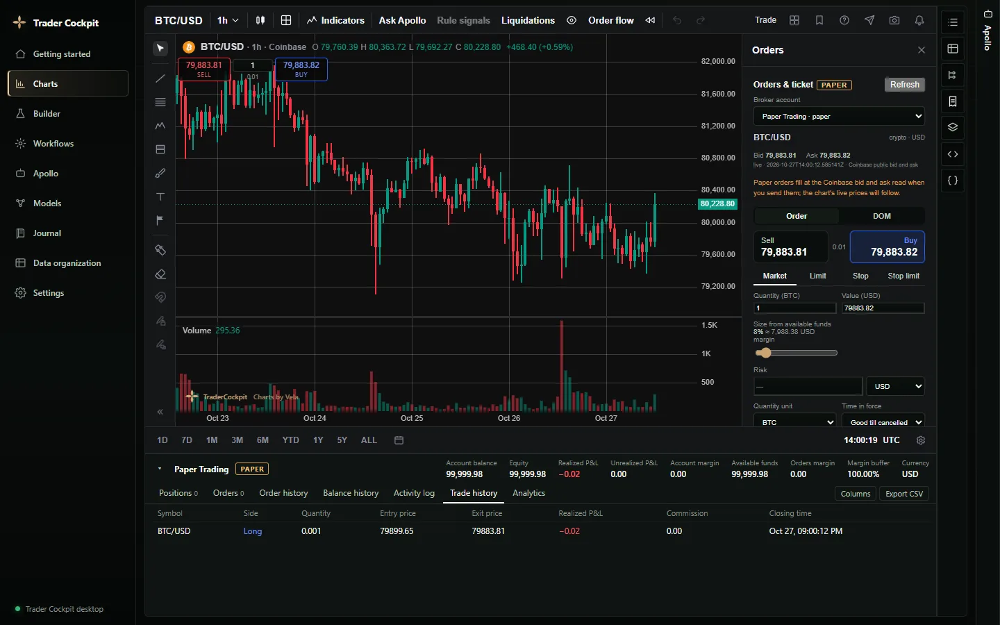

Everything TraderCockpit does.
Every part of the Windows app, in plain words. Research tools, not financial advice, and no result is promised.
Strategy Builder
Search thousands of rule combinations on the market you pick, with the costs and rules you set.
- Genetic, random or sequential search over the rule space, with progress you can watch as it runs.
- Rule parts for conditions and price levels, built on the app's own indicator math.
- Your own trading rules, costs and money management on each step, with a reset to default for any part.
- Strategy templates and build recipes to start from, with a template's rules shown in plain lines before you use it.
- Crypto markets get sensible starting exits and costs, and the app tells you what it changed.
- Saved research ideas and candidates, and a retest of any strategy with its saved settings.

Workflows and robustness checks
Put a strategy through ordered steps, unattended, and see why strategies drop out.
- Ordered steps that run on their own: create, edit, save and reopen a workflow.
- A library of ready-made validation workflows and strategy recipes, with search by market and timeframe.
- Robustness checks on your results: out-of-sample periods, other markets, higher and lower timeframes, slippage and Monte Carlo.
- Walk-forward windows, with a recompute when you change them.
- Move a copy of a workflow to your saved market in one click. Each step keeps its own timeframe where the bars allow, and tells you when it can't.

Results
See how a strategy really traded, with a plain verdict that says so when it's weak.
- One verdict for a strategy, with the reasons behind it.
- Summary, trades, equity, results by period and by market, and trade excursions.
- A trade list with position value, P/L %, run-up and drawdown, a column chooser and CSV.
- Monte Carlo tests and walk-forward results on a strategy's trades.
- Prop-firm challenge and funded-phase simulators, with rules and payouts per symbol.
- Compare two runs side by side, and analysis tools for drawdown, edge decay and news impact.
- Show a strategy on its chart, with where each entry and exit rule was true and why it traded or didn't.
- The strategy written as code in EasyLanguage, MetaTrader, Pine or Python.

Portfolio
Combine your saved strategies and see their results together.
- Auto build: build portfolios from your saved strategies, and send strategies straight from Results.
- Compose: pick strategies yourself, with a weight for each, and see the combined results.
Charts
A full charting workspace on real market data, with indicators, drawings and your own Pine scripts.
- Chart types: bars, candles, hollow candles, volume candles, line, line with markers, step line, area, HLC area, baseline, columns, high-low, Heikin Ashi, Renko, line break, Kagi and range.
- One grouped indicator list: TradingView's built-ins at their defaults, the Builder's own indicators, patterns and profiles, and your own.
- Drawings: trend line, ray, extended line, rectangle, horizontal line and ray.
- VWAP with bands, anchored, rolling and from earnings dates; sessions, killzones and opening range breakouts in New York time; a smart-money study.
- Machine-learning buy and sell signals with a read-out of how they would have done on the visible bars.
- Your own Pine v5 or v6 indicators and strategies run on the chart, with a Strategy Tester. Anything that can't run is listed by line.
- Alerts on price, values, indicator lines and drawings, with notices and sounds.
- Bar Replay, saved views, watchlists, compare charts, and up to 16 charts at once on a paid plan.

Order flow and profiles
See what traded inside each bar, recorded from the exchange's public feed.
- Footprint with per-bar delta and volume, value area, stacked imbalance and row size in ticks.
- TPO market profile, with letters, colours by time, volume, trades or delta, and trading hours.
- Volume profile: fixed range, session and periodic, with value area and point of control.
- Measured delta, cumulative delta, trade counts, volume tails and bar statistics.
- An order book heatmap: resting bids and offers over time under the candles, from Kraken or Coinbase, with the largest walls named.
- Gamma exposure by strike, drawn from an option chain file you import.

Apollo assistant
An assistant beside your work that turns an idea into a strategy you can test. You confirm every change.
- Describe an idea in plain words and get a Builder rule part, or a Pine script that's checked before you see it.
- It fills in Builder settings for you to review, and asks before it compiles or starts a run.
- It recommends a validation workflow for your market and timeframe, and reads your strategy's results with you: the same figures and trades you see.
- It proposes one chart change at a time, shown as a card you apply yourself.
- It writes custom indicators for your charts, and does the maths with 25 built-in finance methods.
- Attach a trade log, a PDF or a chart picture. Your chats are saved and can be exported.
- Web search runs only after you approve each one.
- Apollo never sends live broker orders. It runs on Apollo credits, included with each paid plan.

Models
Machine-learning research on your saved markets or a strategy's trades, judged on data held out from the fit.
- Studies with purged cross-validation, the deflated Sharpe ratio and triple-barrier labels.
- Your chart indicators as features, or a strategy's own trades as the data.
- Held-out forecasts shown on the chart, and a route from a model to a Builder strategy and a Library validation.
- A sample study with clearly labelled made-up trades, so you can learn the page before using your own data.
Journal
Review executions, research results, routines and decisions in one place, kept on your PC.
- Trades, a calendar with daily notes, reports, a notebook, playbooks, routines and prop-firm tracking.
- Import statements from many broker file formats.
- Attach files to notes, use note templates, or draft a note with Apollo.

Market data and import
Free exchange data with no account, or your own files, checked row by row.
- Coinbase and Kraken: free public history and live prices with no account, at any chart timeframe; Builder takes M2 to D5.
- Yahoo daily bars, free.
- Your own price files: CSV in common layouts and TradingView's chart export, checked row by row.
- MetaTrader 5 history and quotes from your own terminal.
- Option chain files with open interest, one per underlying.
- A readiness check on your saved data, and saved history kept in your data folder.
Exports
Take a strategy to your platform, or get a clear reason why it can't match.
- TradingView: retest a strategy on TradingView's bar-close timing, then export it as Pine. It refuses what can't match, with the reason.
- MetaTrader 5: our own indicators, for use in experts.
- Trades as CSV or Excel, charts as PNG, a printable report and prop-firm results from Results.
- Chart data and chart images from any chart.
Paper trading
Practice on any chart without risking money, on live prices where the market has a live feed.
- Our own order simulator on every chart and market, with commission, leverage and shorting.
- Buy and sell on the chart, with order and position lines, take profit and stop loss.
- An account panel with positions, orders, order history, balance history, activity, trades and analytics, plus CSV.
- Practice orders on saved bars in Bar Replay.

Connect your broker
31 brokers connect to TraderCockpit, and your account activity comes into your Journal.
You sign in with your broker in your own browser, and your password never goes into TraderCockpit.
Trade from the chart 13
Place orders from the chart, and see your positions, balances and orders.
- Alpaca Paper
- Binance
- Coinbase
- E*TRADE
- Kraken
- Moomoo
- Public.com
- Stake Australia
- tastytrade
- Trading 212 (with paper)
- Wealthsimple Trade
- Webull
- Webull Canada
See your account 18
See your positions, balances and orders.
- AJ Bell
- BMO InvestorLine
- Bux
- Chase
- CIBC Investor's Edge
- CommSec
- DEGIRO
- Empower
- eToro
- Fidelity
- Interactive Brokers (reports)
- Questrade
- Robinhood
- TD Direct Investing
- Upstox
- Vanguard
- Wells Fargo
- Zerodha
Save and restore
Your work stays on your PC, and you can back it up.
- Strategies, results, charts and data are saved in your own data folder.
- Copy your data folder while the app is closed to back it up, and copy it back to restore.